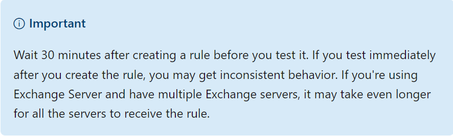
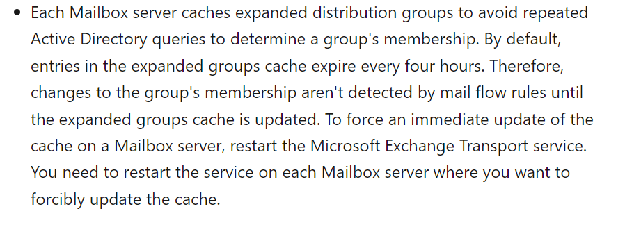

2022.03 遇到问题
前后一共遇到两次问题。第一次新增了Transport Rule，30分钟后，仅有部分预计生效的邮件流hit到了传输规则。第二次修改已有传输规则的scope范围，传输规则作用于某一通讯组成员，增加成员超过30分钟，新成员仍未生效。
解决过程
前后开了两个case给微软官方，第一次Get-MessageTrackingLog + Get-TransportRule给微软，发现所有未生效的邮件流都从同一台邮件服务器路由经过，且在处理传输规则的eventid中，未见到该台邮件服务器处理相应的传输规则。最后结论，建议修改传输规则后，等待30分钟以上使其生效。

第二次和工程师描述了情况后，直接给出了结论。Exchange服务器会缓存通讯组的数据，来防止Exchange服务器频繁请求AD服务器来查询组的信息，默认情况下这部分缓存每四小时会过期，更新组成员后，需要等到缓存过期后才会刷新生效。如果想要做手动刷新，需要重启Exchange Transport Service，重启此服务会影响该Exchange Server的邮件流传输，所以个人觉得没必要为了传输规则的生效做服务重启。而事实上确实在等待超过2小时后，传输规则生效了。问题解决。
